<!DOCTYPE lake>
<h2 data-lake-id="eafTk" id="eafTk"><span data-lake-id="ufca85978" id="ufca85978">学习目标</span></h2><ol list="u32701635"><li data-lake-id="u62290e25" fid="u28454cea" id="u62290e25"><span data-lake-id="u142e678b" id="u142e678b">理解数码管电路原理</span></li><li data-lake-id="u7a521bf7" fid="u28454cea" id="u7a521bf7"><span data-lake-id="u090a7d13" id="u090a7d13">理解74HC595移位寄存器原理</span></li><li data-lake-id="u16b78968" fid="u28454cea" id="u16b78968"><span data-lake-id="u683cd9d5" id="u683cd9d5">了解74HC595移位寄存器电路设计</span></li><li data-lake-id="ub485d15e" fid="u28454cea" id="ub485d15e"><span data-lake-id="udfc51141" id="udfc51141">加强二进制操作</span></li><li data-lake-id="u8ec3447c" fid="u28454cea" id="u8ec3447c"><span data-lake-id="u6bfdb09b" id="u6bfdb09b">驱动74HC595移位寄存器控制数码管</span></li></ol><h2 data-lake-id="bSgCn" id="bSgCn"><span data-lake-id="u0fcc74f5" id="u0fcc74f5">学习内容</span></h2><h3 data-lake-id="DcA2X" id="DcA2X"><span data-lake-id="uec9a8da8" id="uec9a8da8">数码管结构</span></h3><h4 data-lake-id="ClAsA" id="ClAsA"><span data-lake-id="ub29fe17e" id="ub29fe17e">共阴与共阳</span></h4><p data-lake-id="udac93240" id="udac93240"><span data-lake-id="uaf4a4a99" id="uaf4a4a99"> 共阳数码管是指将所有发光二极管的阳极接到一起，形成公共阳极（COM）的数码管，共阳数码管在应用的时候，应该将 COM 端口接到正极，当某一段发光二极管的阴极为低电平的时候，相对应的段就点亮，当某一字段的阴极为高电平的时候，相对应段就不亮。  </span></p><h4 data-lake-id="kQogH" id="kQogH"><span data-lake-id="u8823cc70" id="u8823cc70">1位数码管</span></h4><p data-lake-id="ufa903761" id="ufa903761">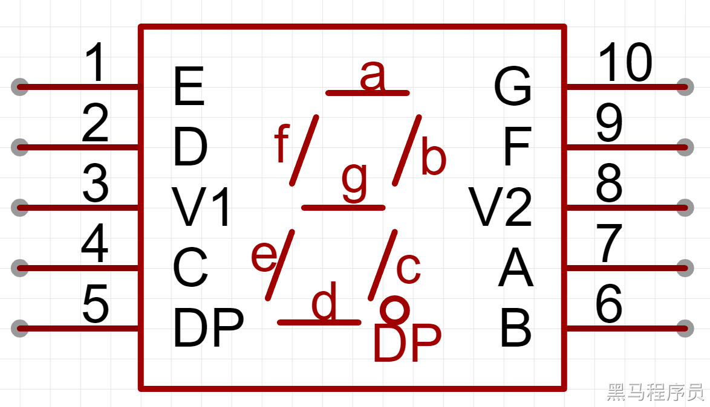</p><p data-lake-id="u2eb842bd" id="u2eb842bd">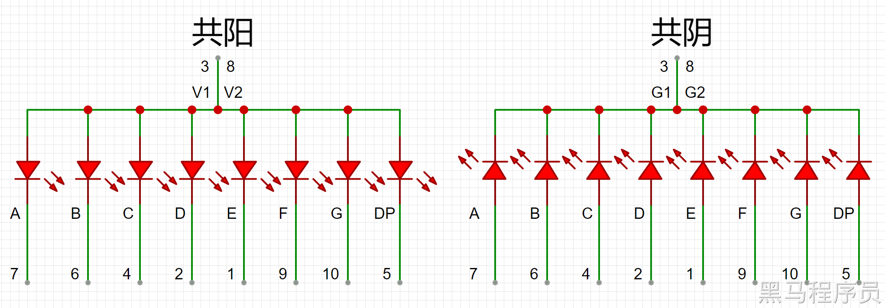</p><h4 data-lake-id="BCqNh" id="BCqNh"><span data-lake-id="uafb19061" id="uafb19061">2位数码管</span></h4><p data-lake-id="uc76b4272" id="uc76b4272">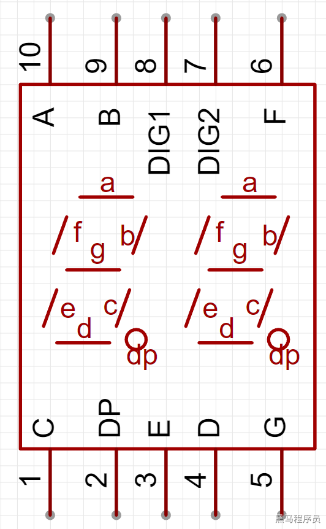</p><p data-lake-id="u642051a0" id="u642051a0">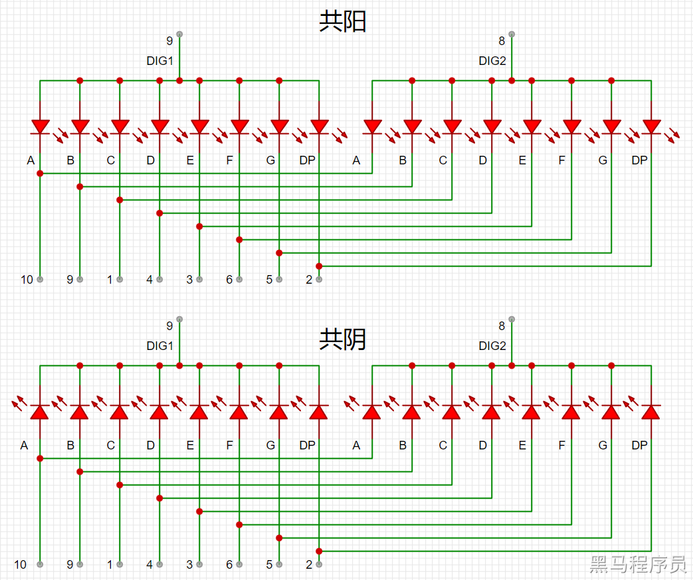</p><h4 data-lake-id="cHozF" id="cHozF"><span data-lake-id="u52298686" id="u52298686">4位数码管</span></h4><p data-lake-id="u07d517ae" id="u07d517ae">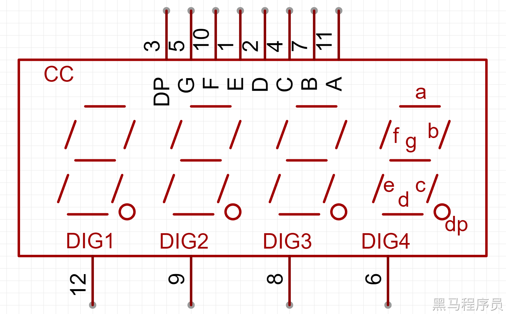</p><p data-lake-id="u3868f33f" id="u3868f33f">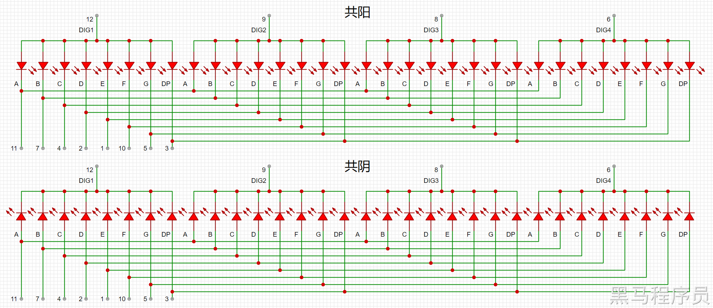</p><p data-lake-id="ucd4e8989" id="ucd4e8989"><br/></p><blockquote class="lake-alert lake-alert-danger" data-lake-id="uddf612a9" id="uddf612a9"><p data-lake-id="u8f885270" id="u8f885270"><span data-lake-id="u30812a40" id="u30812a40">我们课堂案例里用到的就是</span><strong><span data-lake-id="u7584f5c3" id="u7584f5c3">4位共阳数码管</span></strong><span data-lake-id="uc10cf187" id="uc10cf187">。</span></p></blockquote><p data-lake-id="u0b94d622" id="u0b94d622"><span data-lake-id="u492dd8bc" id="u492dd8bc">​</span><br/></p><h3 data-lake-id="ALLyg" id="ALLyg"><span data-lake-id="u4ba00903" id="u4ba00903">移位寄存器</span></h3><p data-lake-id="ufcc91cfc" id="ufcc91cfc"><span data-lake-id="u191c251e" id="u191c251e"> 74HC595 是一款 8 位 CMOS 移位寄存器。8 位并行输出端口为可控的三态输出，一 个串行输入端口，可以实现多级芯片串行控制，组成 8n 位（n 为芯片数量）并行输出  。</span></p><p data-lake-id="u31066549" id="u31066549"><span data-lake-id="ua30805f2" id="ua30805f2">优点：通过逻辑操作来控制LED的状态，少量的引脚控制更多的状态。</span></p><p data-lake-id="u4eee438f" id="u4eee438f">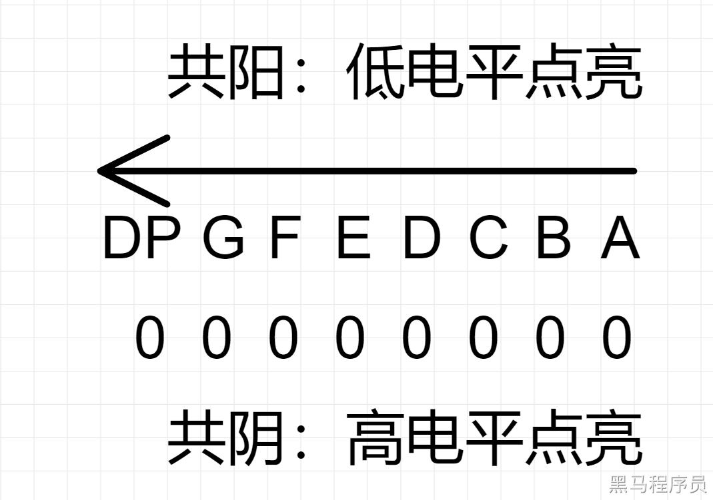</p><h3 data-lake-id="TOUaD" id="TOUaD"><span data-lake-id="u260d0d68" id="u260d0d68">原理图</span></h3><p data-lake-id="u0b58ac0e" id="u0b58ac0e">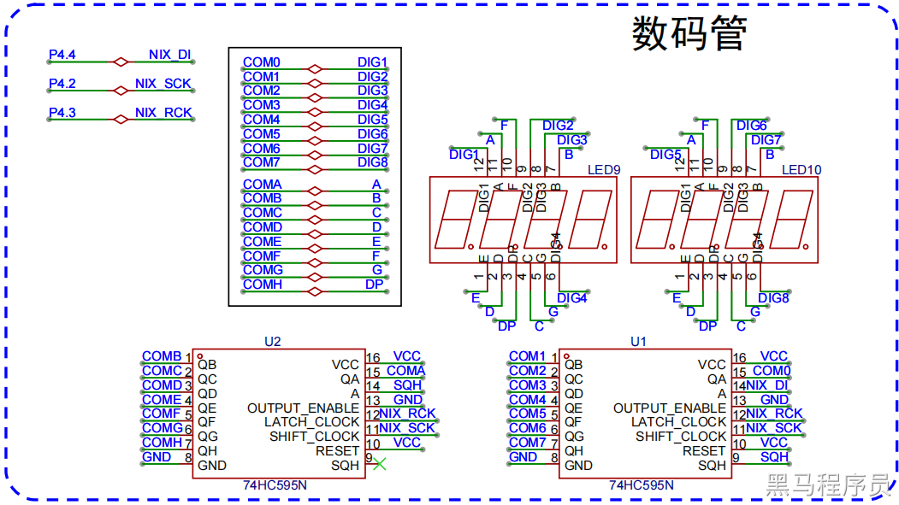</p><h3 data-lake-id="DzdnG" id="DzdnG"><span data-lake-id="ub9b92dd4" id="ub9b92dd4">移位寄存器数据流程</span></h3><p data-lake-id="uee26e7d0" id="uee26e7d0"><span data-lake-id="uf65642b0" id="uf65642b0">移位寄存器的引脚：</span></p><ol list="u1e75c45c"><li data-lake-id="ub42a601c" fid="u0793875c" id="ub42a601c"><span data-lake-id="uc7ff116e" id="uc7ff116e">LATCH_CLOCK:  锁存时钟</span></li><li data-lake-id="u6fcabf24" fid="u0793875c" id="u6fcabf24"><span data-lake-id="u4c1eadc5" id="u4c1eadc5">SHIFT_CLOCK: 移位时钟</span></li><li data-lake-id="udea903f5" fid="u0793875c" id="udea903f5"><span data-lake-id="u1eadc288" id="u1eadc288">A:  数据输入信号管脚</span></li><li data-lake-id="uea1c102d" fid="u0793875c" id="uea1c102d"><span data-lake-id="u48909fed" id="u48909fed">QA~QH: 将二进制数据信号转化为高低电平输出给数码管</span></li><li data-lake-id="u54752a35" fid="u0793875c" id="u54752a35"><span data-lake-id="u0bcbec92" id="u0bcbec92">SQH: 串行数据输出管脚</span></li></ol><p data-lake-id="u3bfa6929" id="u3bfa6929">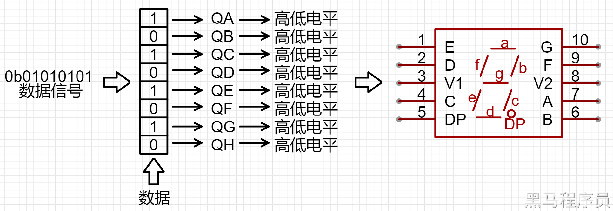</p><p data-lake-id="uea4f38f9" id="uea4f38f9"><span data-lake-id="u703c7d6d" id="u703c7d6d">上图帮我们认识了几个管脚的作用：</span></p><ul list="u4ad4e775"><li data-lake-id="ud4e3772f" fid="uf5d1d276" id="ud4e3772f"><span data-lake-id="u46349b69" id="u46349b69">A：数据信号输入</span></li><li data-lake-id="ueadf3628" fid="uf5d1d276" id="ueadf3628"><span data-lake-id="ua9ce4cff" id="ua9ce4cff">QA~QH: 高低电平输出</span></li></ul><p data-lake-id="ua1b2b76c" id="ua1b2b76c"><span data-lake-id="u44b4d3c7" id="u44b4d3c7">同时再次加深了我们对74HC595功能的理解：将二进制数据转换为高低电平的一个工具。</span></p><h3 data-lake-id="h2N5c" id="h2N5c"><span data-lake-id="u616f7629" id="u616f7629">移位寄存器控制流程</span></h3><p data-lake-id="u4d11a5aa" id="u4d11a5aa"><span data-lake-id="uc9ea18e6" id="uc9ea18e6">数量流程中，数据变成高低电平过程清楚了。但是数据是给到芯片的，</span><code data-lake-id="ubb73c05e" id="ubb73c05e"><span data-lake-id="u92e79db5" id="u92e79db5">给</span></code><span data-lake-id="u2944c859" id="u2944c859">这个过程是比较讲究的。</span></p><p data-lake-id="ueefb2ec4" id="ueefb2ec4"><span data-lake-id="u6c6eb636" id="u6c6eb636">也就是我们传统说法，要按照规矩来传递数据。数据传递是要通过协议的。</span></p><p data-lake-id="u3b94118f" id="u3b94118f"><span data-lake-id="u8b67c597" id="u8b67c597">我们通过 </span><code data-lake-id="uae8a91d4" id="uae8a91d4"><span data-lake-id="ubc742b26" id="ubc742b26">数据输入信号管脚</span></code><span data-lake-id="u6e3371ae" id="u6e3371ae">(原理图上标记为A)来输入数据。我们必须清楚的知道，一个引脚给数据，其实就是给高低电平信号，一个高低电平信号只能表示一个bit，而我们又8给输出口，理论上需要给8次高低电平才能满足8个端口的输出要求。但是如何去界定8给高低电平呢，就需要用时间去界定。提供了两个引脚：</span></p><ol list="u37f35b90"><li data-lake-id="uf79a2f56" fid="u0793875c" id="uf79a2f56"><span data-lake-id="uec7d923c" id="uec7d923c">LATCH_CLOCK:  锁存时钟引脚</span></li><li data-lake-id="u875c83b5" fid="u0793875c" id="u875c83b5"><span data-lake-id="u560410fa" id="u560410fa">SHIFT_CLOCK: 移位时钟引脚</span></li></ol><p data-lake-id="u1f11baf9" id="u1f11baf9">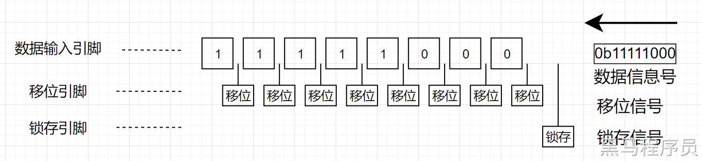</p><p data-lake-id="u042e67ec" id="u042e67ec"><br/></p><p data-lake-id="u152448d7" id="u152448d7"><span data-lake-id="uc62397ea" id="uc62397ea">移位：由低电平变为高电平，表示记录一个位的电平。</span></p><p data-lake-id="ue99ce18f" id="ue99ce18f"><span data-lake-id="u56489c4b" id="u56489c4b">锁存：由低电平变为高电平，表示将记录的数据应用到电路中。</span></p><h3 data-lake-id="gLBCC" id="gLBCC"><span data-lake-id="ub961211f" id="ub961211f">移位寄存器串联</span></h3><p data-lake-id="ubd68c730" id="ubd68c730">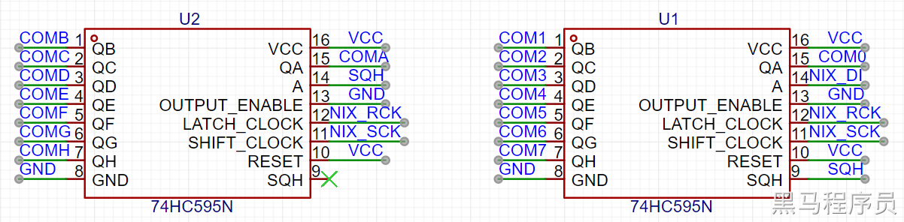</p><p data-lake-id="u1b2c7636" id="u1b2c7636"><span data-lake-id="u3cb3f0d0" id="u3cb3f0d0">本案例中是有两个移位寄存器</span><code data-lake-id="u67c08f0f" id="u67c08f0f"><span data-lake-id="ubef89fca" id="ubef89fca">U1</span></code><span data-lake-id="ua595e385" id="ua595e385">和</span><code data-lake-id="ua817cb6d" id="ua817cb6d"><span data-lake-id="u2fc7bde7" id="u2fc7bde7">U2</span></code><span data-lake-id="u97f14a5f" id="u97f14a5f">的。分别关注两个移位寄存器的</span><code data-lake-id="u0ace07f0" id="u0ace07f0"><span data-lake-id="u8c764376" id="u8c764376">A</span></code><span data-lake-id="uf910db3b" id="uf910db3b">和</span><code data-lake-id="ub25c5073" id="ub25c5073"><span data-lake-id="ue482ebb4" id="ue482ebb4">SQH</span></code><span data-lake-id="u355f9148" id="u355f9148">.</span></p><p data-lake-id="u2304b43f" id="u2304b43f">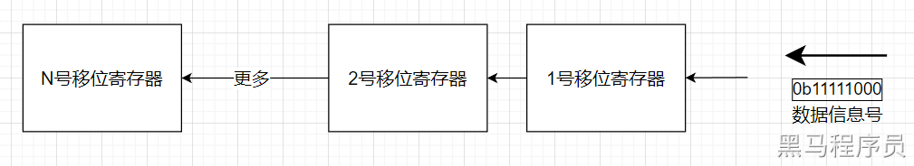</p><p data-lake-id="uef62749b" id="uef62749b"><span data-lake-id="u784a8d9f" id="u784a8d9f">通过流程我们可以明确以下结论:</span></p><ol list="ua4cb3796"><li data-lake-id="ufa3b5f1e" fid="ufe559697" id="ufa3b5f1e"><span data-lake-id="u46bfee88" id="u46bfee88">移位寄存器通过</span><code data-lake-id="ubca7f9c7" id="ubca7f9c7"><span data-lake-id="ua0addc19" id="ua0addc19">A</span></code><span data-lake-id="u915cd906" id="u915cd906">输入数据</span></li><li data-lake-id="u2fccbd2a" fid="ufe559697" id="u2fccbd2a"><span data-lake-id="udbb71f7f" id="udbb71f7f">移位寄存器通过</span><code data-lake-id="u45886b5d" id="u45886b5d"><span data-lake-id="u353c28bb" id="u353c28bb">SQH</span></code><span data-lake-id="ueab4ed31" id="ueab4ed31">输出数据</span></li><li data-lake-id="ubea4c2e1" fid="ufe559697" id="ubea4c2e1"><span data-lake-id="u15c4e00b" id="u15c4e00b">两个移位寄存器通过将一个的</span><code data-lake-id="u51b211fb" id="u51b211fb"><span data-lake-id="u4fad0cbc" id="u4fad0cbc">SQH</span></code><span data-lake-id="u3b5e1008" id="u3b5e1008">输出到另外一个的输入</span><code data-lake-id="u6e273239" id="u6e273239"><span data-lake-id="u9ae4a804" id="u9ae4a804">A</span></code><span data-lake-id="u05d926d6" id="u05d926d6">口，两个移位寄存器就串联了</span></li><li data-lake-id="u930d8b5d" fid="ufe559697" id="u930d8b5d"><span data-lake-id="u9d4ddf90" id="u9d4ddf90">末端的移位寄存器输出口悬空表示不输出</span></li><li data-lake-id="udfce213b" fid="ufe559697" id="udfce213b"><span data-lake-id="u1a2913d7" id="u1a2913d7">数据会传递到末端，也就是数据会先填充的是末端。</span></li></ol><p data-lake-id="ufd1da989" id="ufd1da989"><span data-lake-id="ub4dcce52" id="ub4dcce52">串联后控制流程需要有所改变，改变如下：</span></p><p data-lake-id="ucc5c342d" id="ucc5c342d">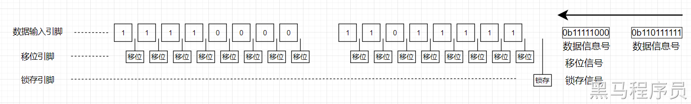</p><p data-lake-id="u9448a92f" id="u9448a92f"><br/></p><p data-lake-id="u67e224ca" id="u67e224ca">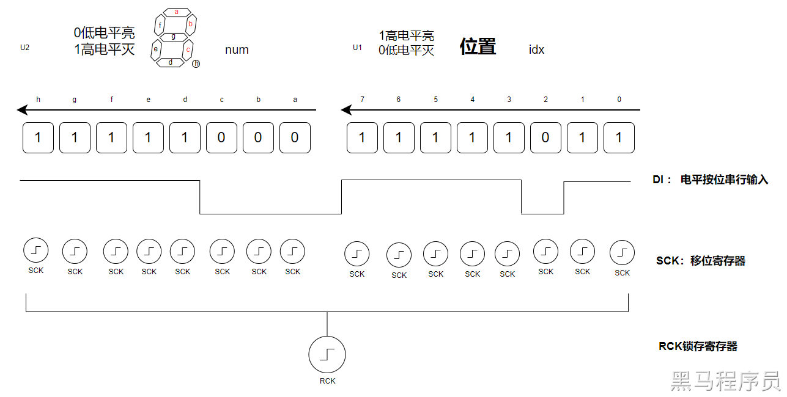</p><p data-lake-id="u37e20f55" id="u37e20f55"><br/></p><ul list="ud43adf56"><li data-lake-id="u316d45b1" fid="uc0162a27" id="u316d45b1"><span data-lake-id="u3a9d68df" id="u3a9d68df">Logic分析仪</span></li></ul><p data-lake-id="ub350f900" id="ub350f900">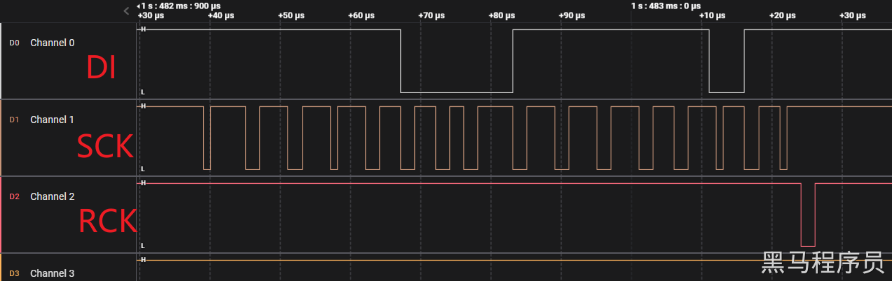</p><ul list="u51ffae5b"><li data-lake-id="ue059fba0" fid="ucb139ced" id="ue059fba0"><span data-lake-id="u10b601ec" id="u10b601ec">Digtals</span></li></ul><p data-lake-id="uc9da69ee" id="uc9da69ee">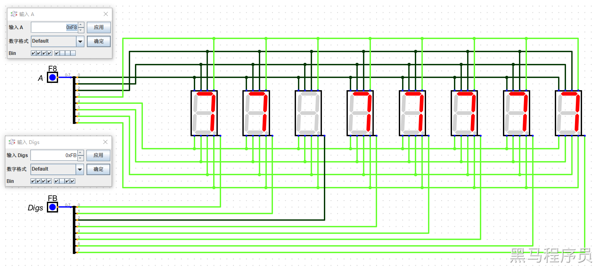</p><p data-lake-id="ubc17ebe4" id="ubc17ebe4"><br/></p><h3 data-lake-id="Eh5pT" id="Eh5pT"><span data-lake-id="u62d5e8ec" id="u62d5e8ec">实现数码管显示</span></h3><span class="yuque-card-unsupported">[codeblock]</span><p data-lake-id="u1f0af8d4" id="u1f0af8d4"><br/></p><h3 data-lake-id="SKkjy" id="SKkjy"><span data-lake-id="u631b9fd5" id="u631b9fd5">段码屏：数码管&amp;液晶屏</span></h3><p data-lake-id="ue4e48036" id="ue4e48036"><span data-lake-id="udf43bd4a" id="udf43bd4a">市面上形形色色的段码屏LCD，液晶屏LCM，其控制原理和这个数码管一致，都是用类似的方法开模定制的。都可以通过移位寄存器，只使用少量IO口进行完全控制，不需要大量的IO口。</span></p><p data-lake-id="u5acfdb27" id="u5acfdb27">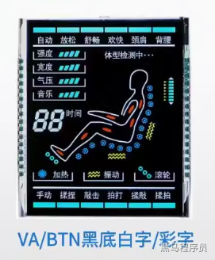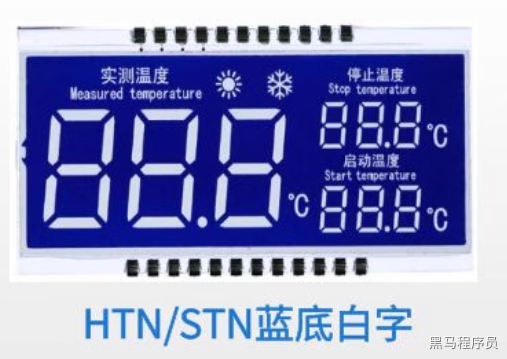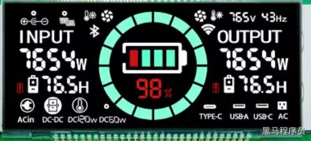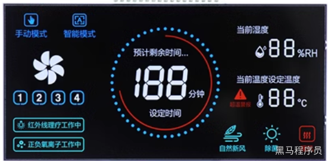</p><p data-lake-id="uaefa95b8" id="uaefa95b8">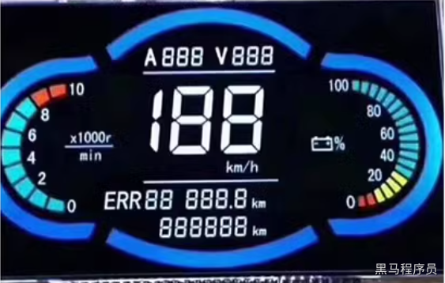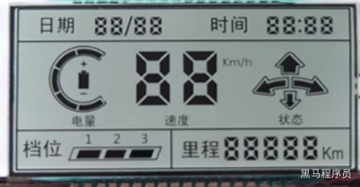</p><p data-lake-id="u22ec4005" id="u22ec4005">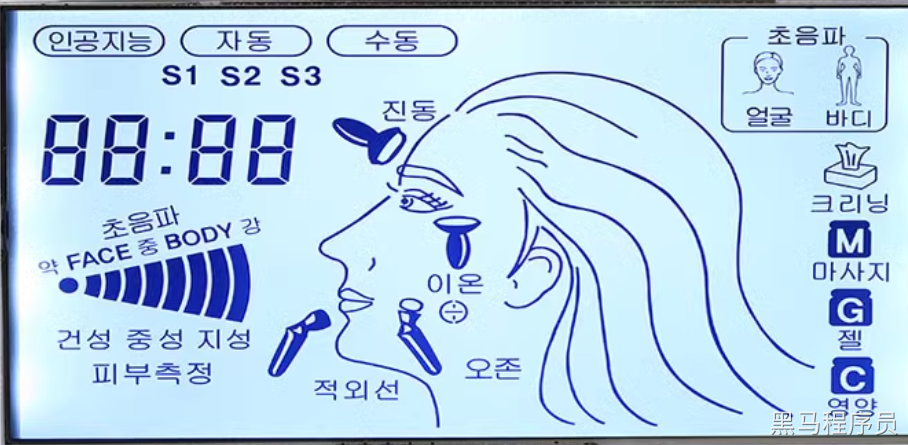</p><p data-lake-id="u73482d9f" id="u73482d9f">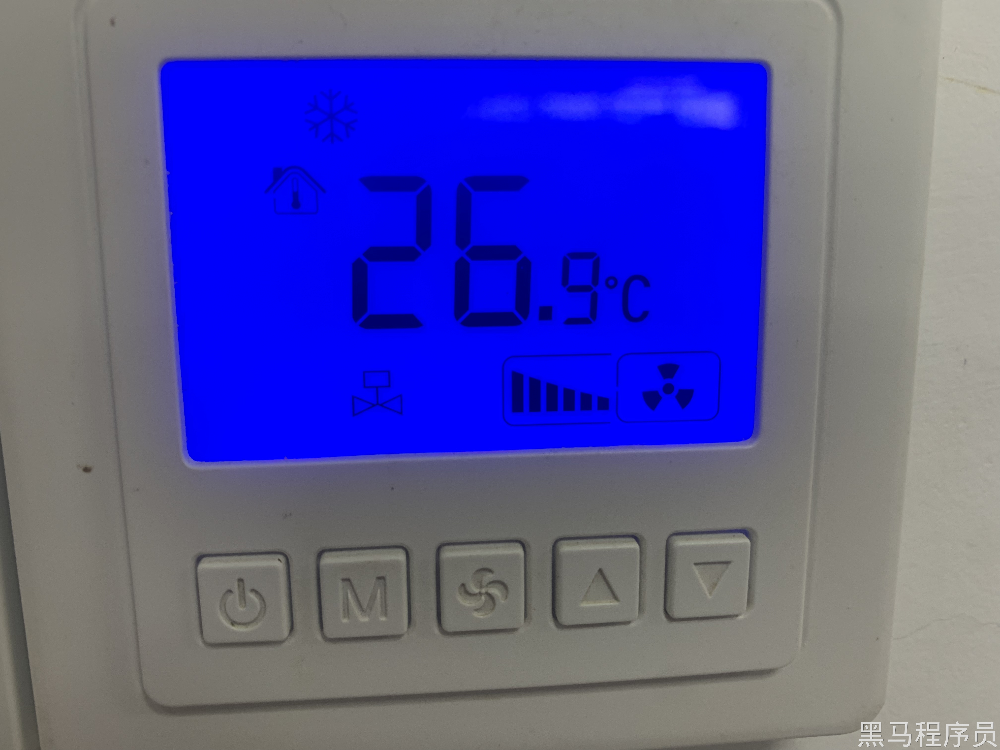</p><p data-lake-id="u84f60eab" id="u84f60eab">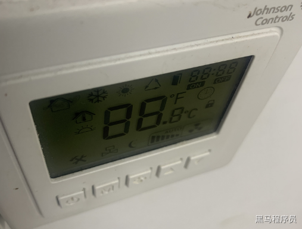</p><p data-lake-id="u2e0817a6" id="u2e0817a6"><span data-lake-id="u80dc3fd9" id="u80dc3fd9">这种断码屏的特点就是颜色鲜艳，成本极低，所以会被大规模采用，但是我们不能被其花哨的表面所蒙蔽。会了移位寄存器和数码管，这些就全部能够拿下。</span></p><p data-lake-id="u21f6e5ab" id="u21f6e5ab"><span data-lake-id="uca5698f5" id="uca5698f5">参见：</span><a data-lake-id="ud6cea541" href="https://item.taobao.com/item.htm?abbucket=11&amp;id=570752864167&amp;ns=1&amp;spm=a21n57.1.0.0.474d523cRNh3sR" id="ud6cea541" rel="noopener noreferrer" target="_blank"><span data-lake-id="u5a46ab80" id="u5a46ab80">https://item.taobao.com/item.htm?abbucket=11&amp;id=570752864167&amp;ns=1&amp;spm=a21n57.1.0.0.474d523cRNh3sR</span></a></p><p data-lake-id="u295358b4" id="u295358b4"><span data-lake-id="u46ea8196" id="u46ea8196">你只需要找到类似下图的共阴共阳的原理图，就能上手开发了。</span></p><p data-lake-id="uf6402b67" id="uf6402b67">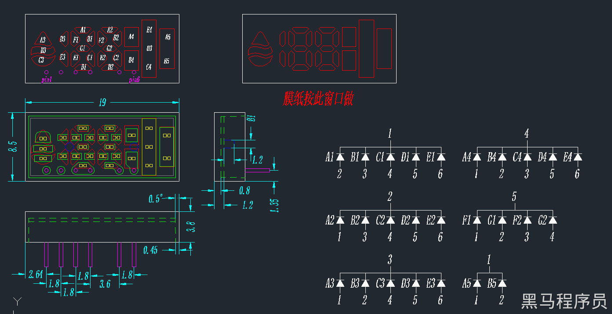</p><h2 data-lake-id="EqjE1" id="EqjE1"><span data-lake-id="u12a5e23e" id="u12a5e23e">练习题</span></h2><ol list="ub29c7839"><li data-lake-id="u4afdb531" fid="u31d5525a" id="u4afdb531"><span data-lake-id="uddac3982" id="uddac3982">实现数码管数字显示</span></li><li data-lake-id="uee3dd0da" fid="u31d5525a" id="uee3dd0da"><span data-lake-id="u0c65fadd" id="u0c65fadd">通过串口控制数码管显示（串口指令，两个字节，一个控制显示，一个控制哪一个灯显示）</span></li></ol>